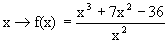
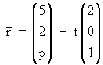
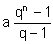
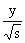

| KANTONSSCHULE REUSSBÜHL | Maturitätsprüfungen 1998 (Bh) |
M a t h e m a t i k Typus A/B
Bemerkungen: Jede Aufgabe soll auf einer neuen Seite begonnen werden.
Zeit: Drei Stunden.
Jede vollständig gelöste Aufgabe wird mit maximal 12 Punkten bewertet.
Für 48 Punkte wird die Note 6 erteilt.
1. Eine gebrochen rationale Funktion ist gegeben durch

a) Bestimme Definitionsbereich, Asymptoten, Nullstellen und Extremalstellen und zeichne den Graphen y = f(x). Wähle als Einheit 0.5 cm.
b) Weise nach, dass die beiden Kurvenäste überall konkav gekrümmt sind.
c) Berechne die Fläche, die von Kurve und x-Achse im 2. Quadranten eingeschlossen wird.
d) Zwei Tangenten der Kurve gehen durch den Koordinatenursprung O. Gib die Abszisse des Berührungspunktes einer dieser Tangenten an.
2. Eine Kugel sowie eine Geradenschar mit dem Scharparameter p werden durch folgende Gleichungen beschrieben:
K: x2 + y2 +z2 = 49 gp :
a) Suche den Winkel, den die Geraden mit der x-y-Ebene bilden. Warum hängt dieser nicht vom Scharparameter p ab ?
b) Wähle für p = -2 und schneide g-2 mit der Kugel K.
c) Schneide gp für allgemeines p mit der Kugel. Für welche Werte von p ergeben sich Tangenten. Notiere die Tangentengleichungen.
d) Lege eine Tangentialebene an die Kugel, die eine dieser Tangenten enthält.
3. Albin und Bea spielen häufig miteinander Tischtennis. Zurzeit ist die Wahrscheinlichkeit, dass Albin ein Spiel gewinnt p = 0.4
a) Am Samstag planen sie sechs Spiele. Mit welcher Wahrscheinlichkeit gewinnen sie gleich viele Partien ? Wie wahrscheinlich ist es, dass Bea mehr als drei Partien gewinnt ?
b) Für den Sonntag vereinbaren sie: Wer zwei Spiele hintereinander oder total deren drei gewonnen hat, ist Sieger. Bestimme die Wahrscheinlichkeit, dass Albin Sieger wird.
c) Falls sonntags Albin tatsächlich Sieger wird, mit welcher Wahrscheinlichkeit hat er dann das erste Spiel gewonnen ?
d) Gib die Wahrscheinlichkeiten an, mit denen die Entscheidung am Sonntag zwei, drei, vier oder fünf Spiele erfordert. Welche gesamte Spieldauer ist zu erwarten, wenn ein Spiel durchschnittlich 20 Minuten dauert ?
4. Eine Funktionenschar ist durch x → fa(x) = a x + e-x - 1 gegeben. Dabei ist der Scharparameter eine reelle Zahl a > 0.
a) Skizziere den Graphen für a = 1 und zeichne die Asymptote.
b) Für a = 1 begrenzen die Kurve y = f1(x), die x-Achse und die schiefe Asymptote im ersten Quadranten eine unendlich ausgedehnte Fläche. Welchen Inhalt hat diese ?
c) Berechne die Koordinaten des Extremums von fa in Abhängigkeit von a.
d) Auf welcher Kurve läuft dieses Extremum, wenn a variiert ?
5. Unabhängige Teilaufgaben:
a) Beweise die Summenformel für eine endliche geometrische Reihe mit vollständiger Induktion
a + aq + aq2 + ... + aqn-1 = 
b) Für welchen Wert s > 0 ist der Abstand der Ebene Es: s x + + z = 1 vom Koordinatenursprung extremal ? Von welcher Art ist dieses Extremum ?
c) Ein Kreissegment über der Sehne A(-4/0) B(4/0), dessen Bogen durch C(0/2) geht, rotiere um die x-Achse. Suche die Kreisgleichung sowie die Funktionsgleichung des Meridians und berechne das Volumen des Rotationskörpers.